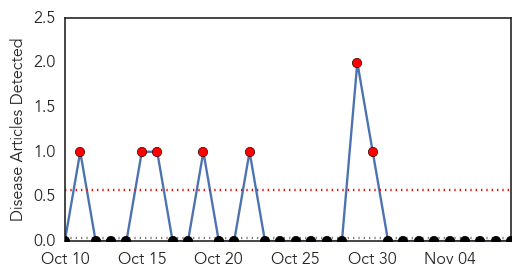
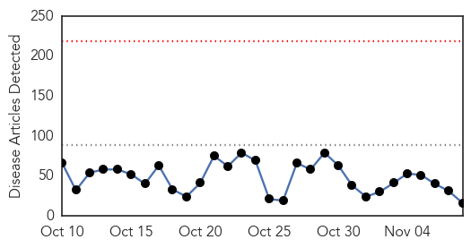
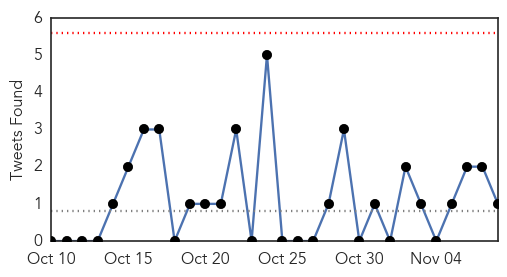
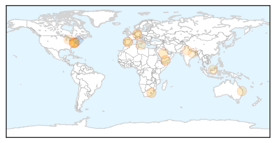
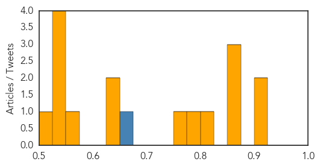

Yellow Fever
30-Day Web Trend
7 alerts, 0 warnings

30-Day Twitter Trend
2 alerts, 0 warnings

Article Locations

Article Confidences

Top Articles:
-
No articles found for Nov 08, 2014
Top Tweets:
-
No tweets found for Nov 08, 2014
Unknown
30-Day Web Trend
0 alerts, 0 warnings

30-Day Twitter Trend
0 alerts, 0 warnings

Article Locations
Article Confidences
Top Articles:
- 0.917
- Chicago Tribune
- 0.917
- Chicago Tribune
- 0.866
- The cockpit of the solar-powered Solar Impulse 2 aircraft is pictured after a training flight at its base in Payerne
- 0.866
- German test pilot Scherdel lands the solar-powered Solar Impulse 2 aircraft after a training flight in Payerne
- 0.866
- U.N. sanctions Yemen's ex-president Saleh, two rebel leaders
- 0.809
- Flu jab warning from health chiefs
- 0.792
- Health department holds flu clinic - Columbia Daily Tribune
- 0.772
- Cumberland Matters: Health Department offers flu shots for children, adults
- 0.637
- Beware Blackbutt bats: Shellharbour councillor
- 0.626
- Beware of a certain chocolate, honey, creams, and herbal products
- 0.567
- Health Insurance protects Patients against Financial Shocks
- 0.550
- Need to spread Ayurveda all over the world Health experts
- 0.549
- Many Docs Mistaken About Allergies: Study
- 0.527
- Need to spread Ayurveda all over the world
- 0.526
- ‘Superbug’ in the trenches
- 0.506
- Malda hospital's infant death run continues, 13 die in a week : India, News
Top Tweets:
- 0.657
- .@IdeasExplorer Sick how, if you don't mind saying? Flu shot cannot give you flu & next day is very short incubation period. 1/2